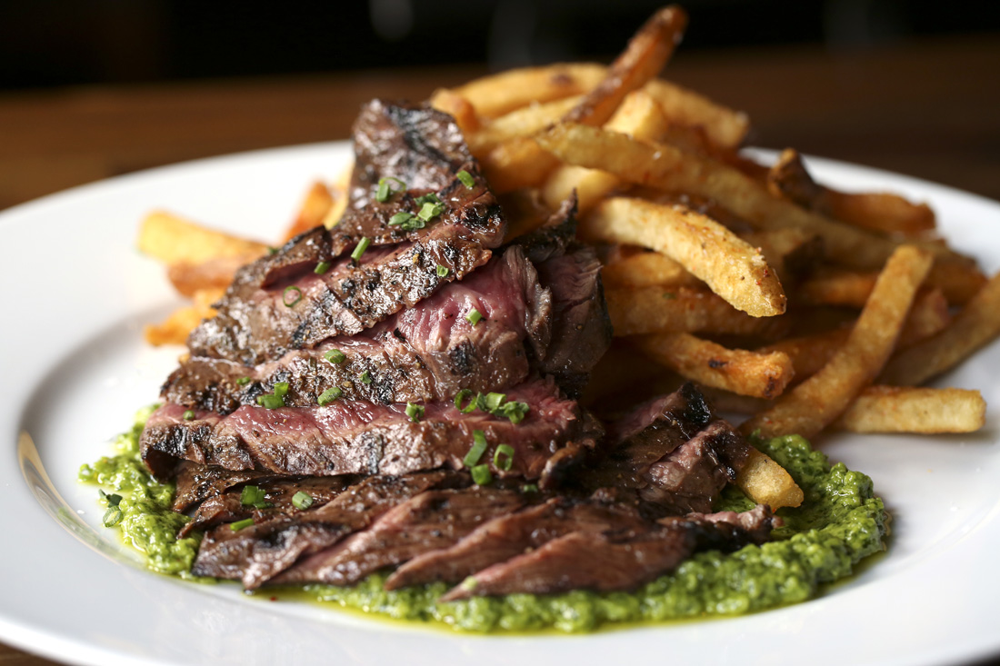

STEAK FRITES
Western Dish (France)

Takes 1 hour
Makes 4 servings
MAIN DISH
Ingredients
- 1-1/2 lb (680 g) yellow-fleshed potatoes, scrubbed
- 1 tbsp (15 mL) olive oil
- 1/4 tsp (1 mL) salt
- 1/4 tsp (1 mL) pepper
- 1 lb (454 g) beef sirloin grilling steak, cut in 4 portions
- 2 tsp (10 mL) chopped fresh thyme
- 1/3 cup (75 mL) mayonnaise
- 1 tbsp (15 mL) chopped fresh chives
- 2 tsp (10 mL) Dijon mustard
- 1 tsp (5 mL) lemon juice
Instruction
- 1. Cut potatoes into 1/2-inch (1 cm) thick wedges; toss with half each of the oil, salt and pepper. Spread on parchment paper–lined baking sheet; bake in 450 degrees F (230 degrees C) oven, turning once, until tender, about 30 minutes. Broil until golden brown, about 3 minutes.
- 2. Meanwhile, sprinkle steak with thyme and remaining salt and pepper. In skillet, heat remaining oil over medium-high heat; cook steak, turning once, until medium-rare, about 6 minutes. Transfer to cutting board and tent with foil; let stand for 10 minutes.
- 3. In small bowl, combine mayonnaise, chives, mustard and lemon juice. Serve along with steaks as dipping sauce for potatoes.
SOURCE : http://www.cbc.ca
Add to Cart
want to try this recipe? order ingredients now!